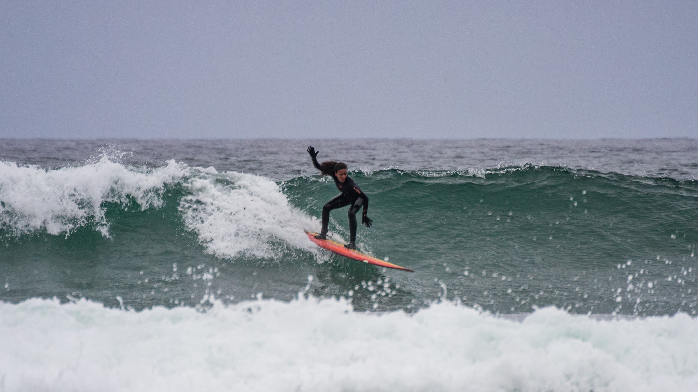

About Veronica
In 2001, I was living in Japan when I had an experience that would ultimately change my life. I had been suffering from low back and leg pain for 5 years when I sought help from the western medicine doctor. I remember waiting in the office for 2 hours before being seen. My pain had become unbearable and constant. It flared up after surfing, yoga, dancing and standing for long periods at my teaching job. Nothing seemed to make it better. My legs throbbed with each heartbeat and I was developing spider veins behind my knees. I showed the doctor my legs after telling him what made the pain worse. He quickly wrote me a prescription for anti-inflammatory drugs and compression stockings for varicose veins. He told me to stop doing yoga and other activities that made it worse. My face-to-face time with him was about 3 minutes long. I was 24 years old
I felt so hopeless after that visit with the doctor. I spoke with my yoga teacher and her daughter about my experience and they referred me to a natural medicine healer in a nearby town. I don’t recall what his exact credentials were, but I know he was trained in acupressure, chiropractic and massage therapy. He asked me what made the pain better and what made it worse. When I said it was worse after yoga, he asked me what kinds of yoga postures seemed to make it worse. When I said surfing, he asked me to lie down on the exam table and demonstrate how I paddled. When I told him I was learning flamenco and salsa, he asked what kind of shoes I wore. When I said standing at my teaching job made it worse, he asked me to stand in front of him as if I were at the blackboard. Needless to say, his inquiries were very thorough and I was beginning to wonder if I was ever going to get my massage. He listened and watched. Then he broke out into a smile. He had come up with a diagnosis that would change my medical condition dramatically.
He explained to me that all of the backbends I was doing in yoga were compressing my lower back and that I needed to balance them with more forward bends and abdominal core strengtheners. He was also a surfer and when I was on the table, he suggested I bend my knees while paddling on my longboard or knee paddle to ease the lower back compression. He warned me that the high heels that I was wearing for salsa and flamenco would add stress to my legs and low back but that scooping my tailbone down and slightly bending my knees would help (something my flamenco teacher was constantly telling me to do). The final suggestion was the most impressive and life changing advice he gave me.

When I was in undergraduate school, I worked at an outdoor flower shop for 5 years. I truly believe that the prolonged standing on concrete is how my low back and leg pain started. I always stood erect with knees locked. Because of the flexibility in my joints, my knees actually hyperextended slightly backward and that led to a sway back in my lower spine. The natural medicine doctor stood next to me as I demonstrated my standing posture and he told me exactly what I was doing wrong. He explained to me that the blood was able to flow down via gravity with ease but with my knees hyperextended and my lower back in a sway, the return blood flow was slowed by the compression in my lower spine….hence the painful throbbing sensation and vein issues around my knees. He demonstrated how to put a slight bend in my knees while standing and how to tuck my tailbone downward to take the pressure off the lower back. That very advice unlocked the secret to healing my chronic pain. Simple. Powerful. Natural.
That was it!!!!! Of course, he did bodywork and adjusted my spine but the most powerful part of that healing session was educating me on my condition. He gave me the power to heal myself by teaching me what I was doing wrong and showing me the proper way to carry my body. I will never every forget this experience. He truly empowered me and changed my life. I told myself that I wanted to help people in the way that he helped me.
Around that same time, I had applied to a Doctorate Program in Psychology in California. I thought I wanted to continue my psychology studies and pursue forensic psychology but I was so inspired by the healing work this man did for me. I decided to take another year off, after 2 years in Japan, to travel and study at the school of life.
I ended up in Thailand for a couple of months where I studied Traditional Thai Massage. I was introduced to the concept of meridians (the pathways in the body which move qi, also known as life force, throughout every part of the body). Studying Thai massage taught me the importance of removing obstructions from the body. In massage, we use pressure to activate the meridians and move the qi. In acupuncture, we use needles at specific points (acupoints) to open the meridians and clear obstruction. It is believed that when all of the meridians in the body are opened, you will maintain perfect health.
I knew I wanted to pursue bodywork and help people with their suffering but I had been traveling for 3 years now and was ready to return to the USA. I looked at massage schools when I returned home and found a school in Hawaii that taught Acupuncture, Herbal Medicine, Nutrition, Cupping and Massage. It was a Master’s Program in Traditional Chinese Medicine. After my first day in class, I knew I had found my calling.
Today, as a Licensed Acupuncturist and Herbalist, I am passionate about helping people who are suffering. I am always looking for new insights on how to treat medical conditions naturally. The tools I use are natural, yet effective. I LOVE to treat pain, stress and digestive issues. These are all things that I have suffered from in the past and that I continue to address in my life, naturally. I have a profound love of learning and of teaching.